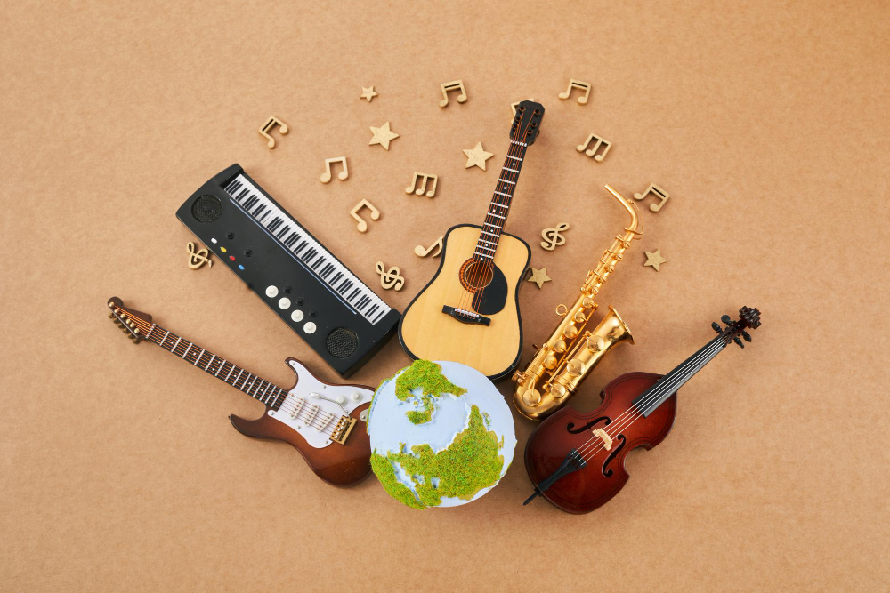

My Passion for Music

Music has been one of my favorite hobbies for many years. I find it very relaxing when I get to hear or even play music. My parents said that ever since I was little, I could not fall asleep without listening to music. I just love music so much. I always say that music is like a universal language that anybody can understand and everybody can connect and relate to no matter our differences. Throughout the years, I have been in multiple bands with other people and I think it is a very fun hobby.
I enjoy learning different instruments because each one has a unique role in music. I like to spend time practicing regularly because it helps me take my mind off things like school or work. It calms me down and gives my mind and body a refresh.
Piano
The piano was one of the first instruments that I learned. I found it very hard at first, especially being a self-taught musician. However, I loved seeing the results of hours of practicing and trial and error. As of now, I can humbly say I can play almost anything.
Bass Guitar
Bass guitar is probably my least favorite instrument to play if I am honest. I like it, but it is simple and subtle. Even so, I have become pretty good at it through practice.
Guitar
Playing guitar has been so fun. In every band I have played in, I have usually been the guitar player because I love playing solos and enjoy how it sounds. I also like how it complements the piano.
Drums
Drums have helped me develop good coordination. I enjoy the amount of movement they require compared to other instruments. Nothing beats the satisfaction of playing the drums and being part of the rhythm of the song.
Why Music Is Important to Me
Music is more than just a hobby for me. It provides a way to express creativity and relieve stress. Through music I have learned patience, dedication, and the importance of continuous practice.
I hope to continue improving my skills on piano, bass guitar, guitar, and drums while I pursue my career. One day I would love to have my own home studio where I can continue creating and enjoying music.